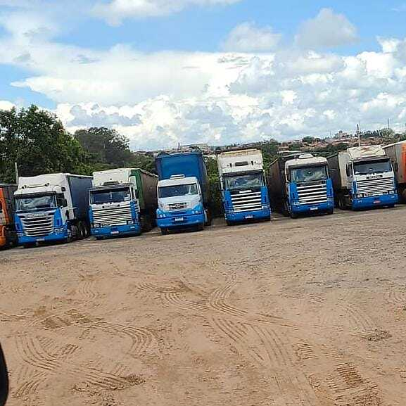

🛡️
Segurança
Garantir a segurança das cargas e das pessoas.
CONHEÇA A EMPRESA
A história e os princípios da Transportadora Gusmão.

NOSSA HISTÓRIA
João Batista Gusmão iniciou sua trajetória profissional como caminhoneiro autônomo, levando turmas para fazendas.
Aos 20 anos, conquistou seu primeiro caminhão e seguiu na profissão até conquistar sua própria transportadora.
Hoje, a empresa conta com 12 caminhões e realiza transportes para todo o território nacional.
NOSSOS PRINCÍPIOS
Garantir a segurança das cargas e das pessoas.
Trabalhar para cumprir os compromissos assumidos.
Agir com transparência, ética e respeito.
Buscar qualidade em cada etapa do transporte.
DADOS DA EMPRESA
Aline Cristina Gusmão ME
Transportes Gusmão
14.129.468/0001-95
Rua Minas Gerais, 384 - Vila Santa Rosa
Mococa - SP | CEP 13731-140